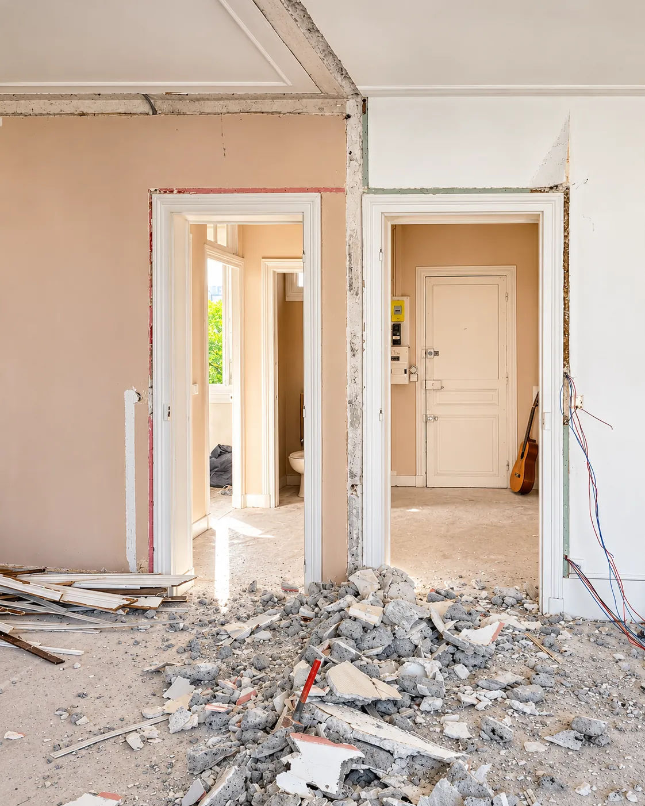
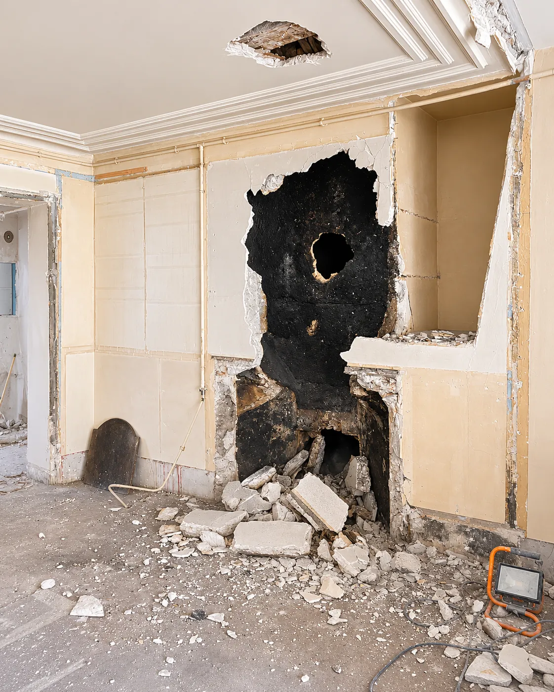
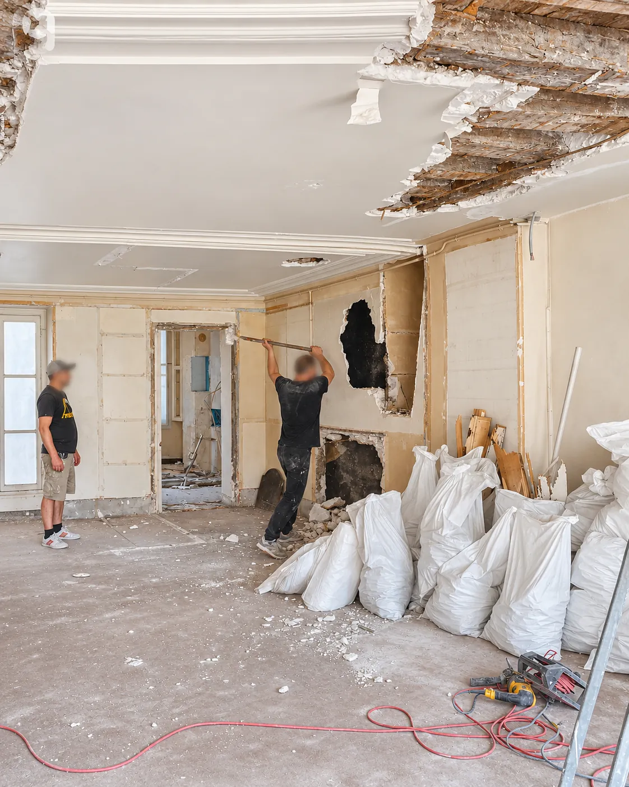
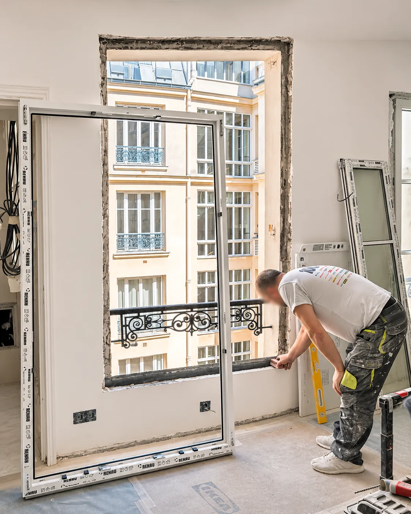
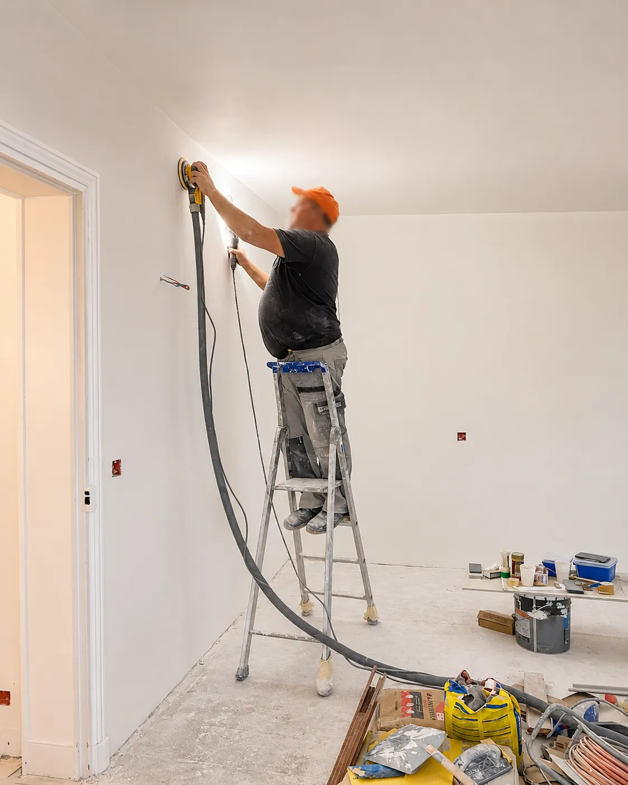
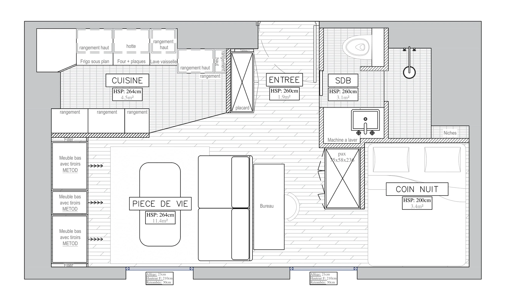
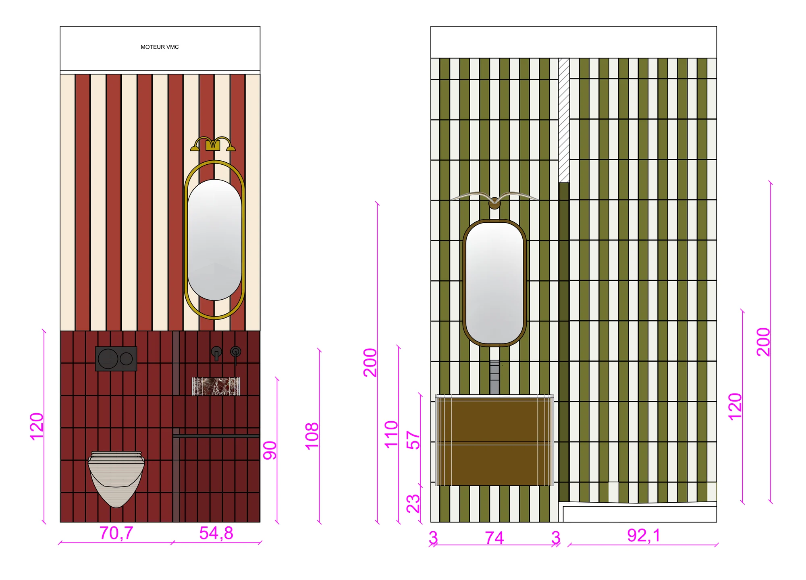

Stouls Studio / Renovation
A project designed down to the last detail, and seen through on site
Rethinking the spaces, drawing the plans, choosing the materials and imagining the details that will make the difference: I design your interior as a whole, taking into account the way you live and the character of the place.
To bring the project to life, I work with teams of tradespeople in every trade, people I have known and trusted for years. I supervise the site and make sure, alongside them, that the work is done properly, down to the final finishes.
On site





What you approve before work starts



Nothing is built that you have not seen and approved. Before work starts, I put three things in front of you.
- The project in images: the new layout and, where it helps, the rooms modeled in three dimensions, so you can change your mind while it still costs nothing.
- The technical drawings: the renovation plans and the dimensioned elevations of the kitchen, the bathrooms and each piece of millwork. Contractors price and build from these.
- The selection: the materials, the furniture, the lights and the decoration chosen with you, listed item by item.
You approve and sign the drawings. The final quote is drawn up from the finished set, so it prices exactly what you approved. More plans, elevations and visualizations.
What is included
Design
A study of what is there, then the new layout. Kitchen, bathrooms, built-in cabinetry, lighting and colors are drawn for the apartment as it really is.
Technical drawings
Renovation plans and elevations, detailed enough for every contractor to price the same thing and build it without guessing.
Materials and furniture
Floors, tiles, faucets, lights, fabrics, furniture and objects, selected with you and listed with the drawings.
Building approvals
Reading the co-ownership rules, preparing the file for the building manager and the co-owners' vote where one is needed, and any city hall filing.
Site supervision
Visits through the renovation, a written report every week or two with photographs, and punch-list items listed and closed before the last payment.
Furnishing and handover
From the sofa to the corkscrew, if you want it. The apartment is delivered ready to live in or to rent out.
Where the renovation fits
The renovation is the heart of both ways of working with the studio. If you have not bought yet, it follows the apartment search. If you already own the apartment, it starts with a study of the place and your brief.
The two options, step by step, and how the renovation is supervised.
What old Paris buildings do to a plan
Most of Paris was built before 1914. The floors are wood or iron joists, the walls between rooms are often part of the structure, and the waste pipes run where they were put a century ago.
That decides where a bathroom can go, which walls can open, and whether the floor can take a stone countertop. It is also why two apartments of the same size can cost very different amounts to renovate.
I design with those limits known from the first visit. It keeps the quotes honest and avoids the mid-site surprise that eats the contingency.
Questions about the renovation
Do I need the building's permission to renovate?
For work inside your apartment that touches nothing shared, usually not. For anything affecting structure, shared pipes, the façade or windows, the co-owners' association has to agree, and some work also needs a filing at the city hall. I check the building's rules before the design is fixed.
How do I pay contractors from abroad?
By wire transfer, directly to each contractor, against invoices I have checked against work done. I do not collect or hold contractor payments.
How do I follow the renovation?
A written report every week or two, photographs from site, and a video visit of the apartment when you cannot come. Every choice that is yours to make comes with pictures and a price.
Can you renovate only the kitchen or bathroom?
Yes, the studio also does partial renovations. Most apartments bought from abroad need the wiring, plumbing and layout looked at together, though. It costs less to open the walls once.